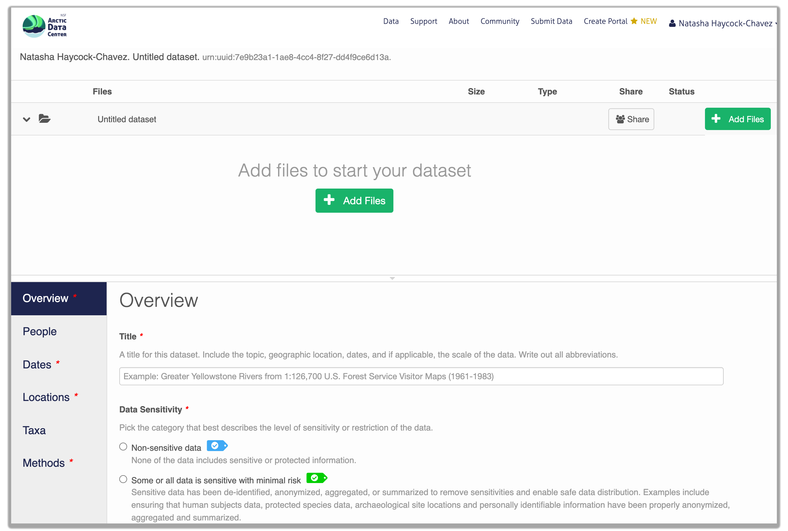
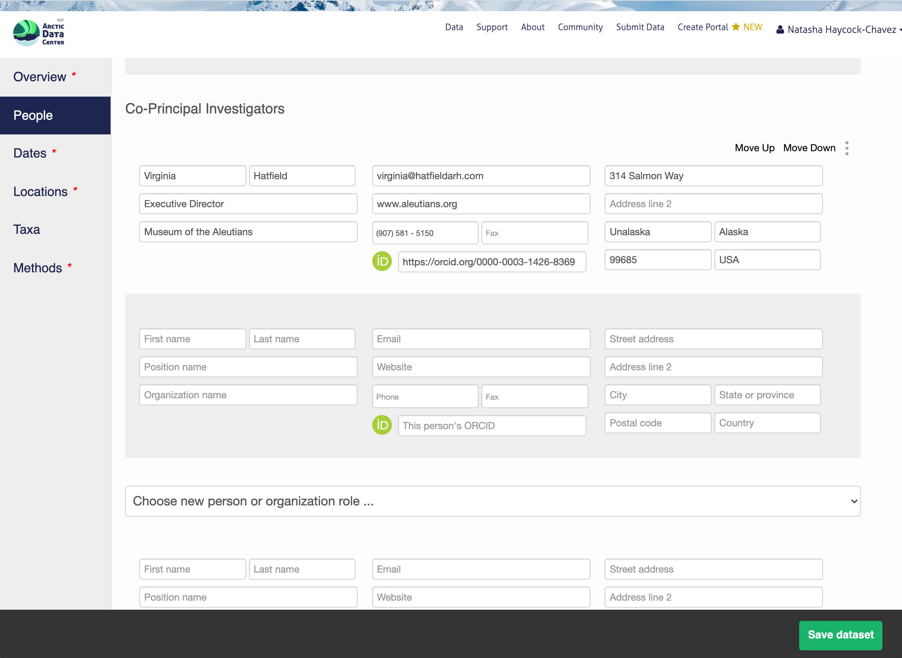
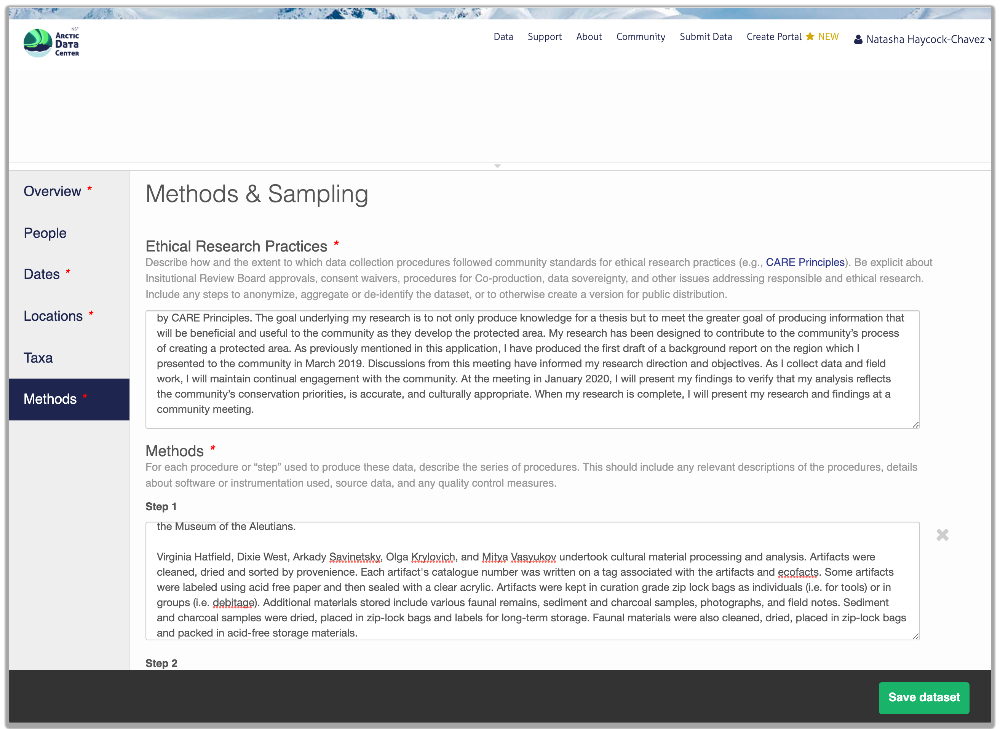
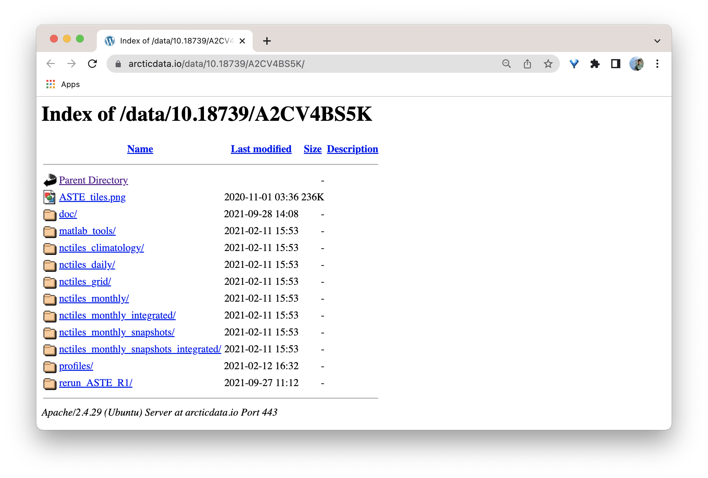
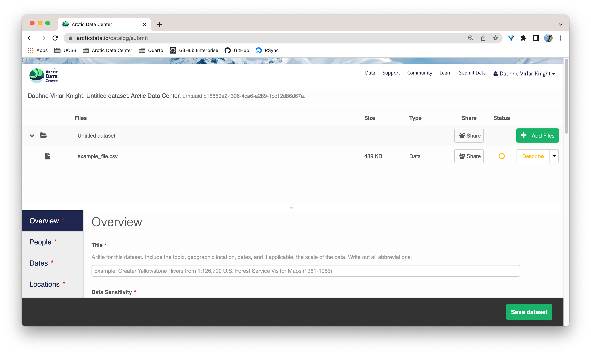

<?xml version="1.0" encoding="UTF-8"?>
<eml:eml packageId="df35d.442.6" system="knb"
xmlns:eml="eml://ecoinformatics.org/eml-2.1.1">
<dataset>
<title>Improving Preseason Forecasts of Sockeye Salmon Runs through
Salmon Smolt Monitoring in Kenai River, Alaska: 2005 - 2007</title>
<creator id="1385594069457">
<individualName>
<givenName>Mark</givenName>
<surName>Willette</surName>
</individualName>
<organizationName>Alaska Department of Fish and Game</organizationName>
<positionName>Fishery Biologist</positionName>
<address>
<city>Soldotna</city>
<administrativeArea>Alaska</administrativeArea>
<country>USA</country>
</address>
<phone phonetype="voice">(907)260-2911</phone>
<electronicMailAddress>mark.willette@alaska.gov</electronicMailAddress>
</creator>
...
</dataset>
</eml:eml>5 Documenting and Publishing Data
5.1 Learning Objectives
- Become familiar with the submission process
- Understand what constitutes as “large data”
- Know when to reach out to support team for help
- Lean how data & code can be documented and published in open data archives
5.2 Introduction
A data repository is a database infrastructure that collects, manages, and stores data. In addition to the Arctic Data Center, there are many other repositories dedicated to archiving data, code, and creating rich metadata. The Knowledge Network for Biocomplexity (KNB), the Digital Archaeological Record (tDAR), Environmental Data Initiative (EDI), and Zenodo are all examples of dedicated data repositories.
5.3 Metadata
Metadata are documentation describing the content, context, and structure of data to enable future interpretation and reuse of the data. Generally, metadata describe who collected the data, what data were collected, when and where they were collected, and why they were collected.
For consistency, metadata are typically structured following metadata content standards such as the Ecological Metadata Language (EML). For example, here’s an excerpt of the machine-readable version of the metadata for a sockeye salmon dataset:
Alternatively, the same metadata document can be converted to HTML format and displayed in a more readable form on the web:

As you can see from the picture above, users can download either the whole dataset or its individual components. This makes the dataset and its associated data resuable.
Additionally, the repository tracks how many times each file has been downloaded, which gives great feedback to researchers on the activity for their published data.
5.4 Data Package Structure
Note that the dataset above lists a collection of files that are contained within the dataset. We define a data package as a scientifically useful collection of data and metadata that a researcher wants to preserve. Sometimes a data package represents all of the data from a particular experiment, while at other times it might be all of the data from a grant, or on a topic, or associated with a paper. Whatever the extent, we define a data package as having one or more data files, software files, and other scientific products such as graphs and images, all tied together with a descriptive metadata document.

These data repositories all assign a unique identifier to every version of every data file, similarly to how it works with source code commits in GitHub. Those identifiers usually take one of two forms. A DOI (digital object identifier) identifier is often assigned to the metadata and becomes the publicly citable identifier for the package. Each of the other files gets a global identifier, often a UUID (universally unique identifier) that is globally unique. In the example above, the package can be cited with the DOI doi:10.5063/F1F18WN4, and each of the individual files have their own identifiers as well.
5.5 Submitting Data from the Large Data Perspective
5.6 Archiving Data: The Large Data Perspective
There are two components to any data package archived with the Arctic Data Center: the metadata & the data themselves. Data can be images, plain text documents, tabular data, spatial data, scripts used to analyze the data, a readme file, and more. To the best of your ability, please make sure that the data uploaded are in an open format, rather than proprietary. This means uploading a .pdf rather than a .docx file, or .csv rather than .xlsx. That being said, we understand that this is not always possible or reasonable for users, as is the case sometimes if they’ve used ESRI products rather than QGIS.
This section provides an overview of some highlights within the data submission process, and will specifically address issues related to datasets with large amounts of data, whether that be in number of files or cumulative file size.
First we’ll go over the metadata submission; then learn how to upload the data using a secure File Transfer Protocol; and finally how to add attribute information to the data.
5.6.1 Step 1: The Metadata Submission
5.6.1.1 ORCiDs
In order to archive data with the Arctic Data Center, you must log in with your ORCID account. If you do not have one, you can create at https://orcid.org/. ORCID is a non-profit organization made up of research institutions, funders, publishers and other stakeholders in the research space. ORCID stands for Open Researcher and Contributor ID. The purpose of ORCID is to give researchers a unique identifier which then helps highlight and give credit to researchers for their work. If you click on someone’s ORCID, their work and research contributions will show up (as long as the researcher used ORCID to publish or post their work).
Once you’re logged into the Arctic Data Center with your ORCID, you can access the data submission form by clicking “Submit Data” in the navigation bar. For most dataset submissions, you would submit your data and metadata at the same using the “Add Files” buttons seen in the image below. However, when you know you have a large quantity of files or large cumulative file size, you should focus only on submitting metadata through the web form. We’ll discuss how to submit large quantities of data in the next section.

5.6.1.2 Overview Section
In the overview section, you will include a descriptive title of your data set, select the appropriate data sensitivity tag, an abstract of the data set, keywords, funding information, and a license.
In general, if your data has been anonymized or de-identified in any way, your submission is no longer considered to have “Non-sensitive data”. If you have not had to de-identify your data or through an Instituional Review Board process, you should select the “Non-sensitive data” tag. You can find a more in-depth review of the data sensitivity tag in Chapter 12 of our Fundamentals in Data Management coursebook.

You also must enter a funding award number and choose a license. The funding field will search for an NSF award identifier based on words in its title or the number itself. When including funding information not from an NSF award, please make sure to add an award number, title, and organization if possible.
The licensing options are CC-0 and CC-BY, both of which allow your data to be downloaded and re-used by other researchers.
CC-0 Public Domain Dedication: “…can copy, modify, distribute and perform the work, even for commercial purposes, all without asking permission.”
CC-BY: Attribution 4.0 International License: “…free to…copy,…redistribute,…remix, transform, and build upon the material for any purpose, even commercially,…[but] must give appropriate credit, provide a link to the license, and indicate if changes were made.”

5.6.1.3 People Information
Information about the people associated with the dataset is essential to provide credit through citation and to help people understand who made contributions to the product. Enter information for the following people:
Creators - all the people who should be in the citation for the dataset
Contacts - one is required, but defaults to the dataset submitter if omitted
Principal Investigators
Any others that are relevant
For each, please provide their ORCID identifier, which helps link this dataset to their other scholarly works.

5.6.1.4 Temporal Information
Add the temporal coverage of the data, which represents the time period to which data apply. You may notice as you begin to fill in the date information that a second box automatically appears. The editor allows you to enter multiple dates. Please use multiple date ranges if your sampling was discontinuous.

5.6.1.5 Location Information
The geospatial location that the data were collected is critical for discovery and interpretation of the data. Coordinates are entered in decimal degrees, and be sure to use negative values for West longitudes. The editor allows you to enter multiple locations, which you should do if you had noncontiguous sampling locations. This is particularly important if your sites are separated by large distances, so that spatial search will be more precise.

Note that, if you miss fields that are required, they will be highlighted in red to draw your attention. In this case, for the description, provide a comma-separated place name, ordered from the local to global:
- Mission Canyon, Santa Barbara, California, USA

5.6.1.6 Methods
Methods are critical to the accurate interpretation and reuse of your data. The editor allows you to add multiple different methods sections, so that you can include details of sampling methods, experimental design, quality assurance procedures, and/or computational techniques and software. Please be complete with your methods sections, as they are fundamentally important to reuse of the data. Ideally, enough detail should be provided such that a reasonable scientist could interpret the study and data for reuse without needing to consult the researchers or any other resources.
Included in the methods section is a question that asks users about the ethical research practices that may or may not have been considered throughout the research process. You will learn more about this in Chapter 14, and can find more in-depth information on our website’s data ethics page.
The ethical research practices response box must be filled out in order to save your dataset. If users feel as though this question is not applicable to their research, we encourage them to discuss why that is rather than simply stating “Not Applicable,” or some variation thereof. For example, say a researcher has compiled satellite imagery of weather patterns over the open ocean. Rather than respond with “N/A”, a user should instead include something to the effect of “Dataset contains satellite imagery of weather patterns over the Atlantic Ocean. Imagery was downloaded from NASA and NOAA, and does not contain any individual’s identifiable information.” When in doubt, you can always email the support team at support@arcticdata.io.

5.6.1.7 Save Metadata Submission
When you’re finished editing the narrative metadata, click the Save Dataset button at the bottom right of your screen.
If there are errors or missing fields, they will be highlighted with a red banner as seen earlier. Correct those, and then try submitting again. If the save button disappears after making corrections, add a space in the abstract and the save button should reappear. If not, please reach out to the support team for assistance.
When you are successful, you should see a large green banner with a link to the current dataset view. Click the X to close that banner if you want to continue editing metadata.

5.6.2 Step 2: Uploading Large Data
In order to submit your large data files to the Arctic Data Center repository, we encourage users to directly upload their data to the Data Team’s servers using a secure file transfer protocol (FTP). Our team uses and recommends the free program Cyberduck.
Before we begin, let’s answer the following question: Why would a user want to upload their data through a separate process, rather than the web form when they submit their metadata?
Depending on your internet connection, the number of files you have, and the cumulative size of the data, users may experience difficulty uploading their data through the submission form. These difficulties are most often significantly reduced upload speeds and submission malfunctions. As such, it is best for all parties for large quantities of data to be uploaded directly to our server through an FTP.
Before you can upload your data to the Data Team’s server, make sure to email us at support@arcticdata.io to retrieve the login password. Once you have that, you can proceed through the following steps.
Note
Please note, if you have multiple terabytes of data, it may be best to arrange a shipment of an external hard drive.
When you start Cyberduck, you should see a screen similar to the image below.

Click the arrows of the drop down menu that says “FTP”, and select the “SFTP” option. Make sure you enter datateam.nceas.ucsb.edu as the server, and visitor as the username. Enter the password, and click connect.
Note
If prompted about an unknown fingerprint, click allow.

Once you have successfully logged into the visitor folder, you will be able to see the folders of other users who have also uploaded their data. Notice the folders are almost exclusively the user’s last name.

When you email the Data Team asking for the login password, they will instruct you to add a folder with your last name (assuming one does not already exist). You can add a folder by clicking the cog icon labeled “Action”, and then selecting “New Folder” from the drop down menu. Once you have your own folder, you can upload your data by again clicking the “Action” button, and selecting “Upload” from the menu.

Tip
If you know that you will need to use this process for more than one dataset, we suggest creating folders with the same name as the associated dataset’s title. This way, it will be clear as to which submission the data should be associated with.
Once you have finished uploading your data to our servers, please let the Data Team know via email so that we can continue associate your uploaded data with your metadata submission.
As mentioned in Step 1: The Metadata Submission section above, when the data package is finalized and made public, there will be a sentence in the abstract that directs users to a separate page where your data will live. The following image is an example of where the data from this dataset live.

5.6.3 Step 3: Adding File & Variable Level Metadata
The final major section of metadata concerns the structure and content of your data files. Assuming there are many files (and not a few very large ones), it would be unreasonable for users to input file and variable level metadata for each file. When this situation occurs, we encourage users to fill out as much information as possible for each unique type of file. Once that is completed, usually with some assistance from the Data Team, we will then programmatically carry over the information to other relevant files.
When you’re data are associated with your metadata submission, they will appear in the data section at the top of the page when you go to edit your dataset. Choose which file you would like to begin editing by selecting the “Describe” button to the right of the file name.

Once there, you will see the following screen. In the Overview section, we recommend not editing the file name, and instead add a descriptive overview of the file. Once done, click the Attributes tab.